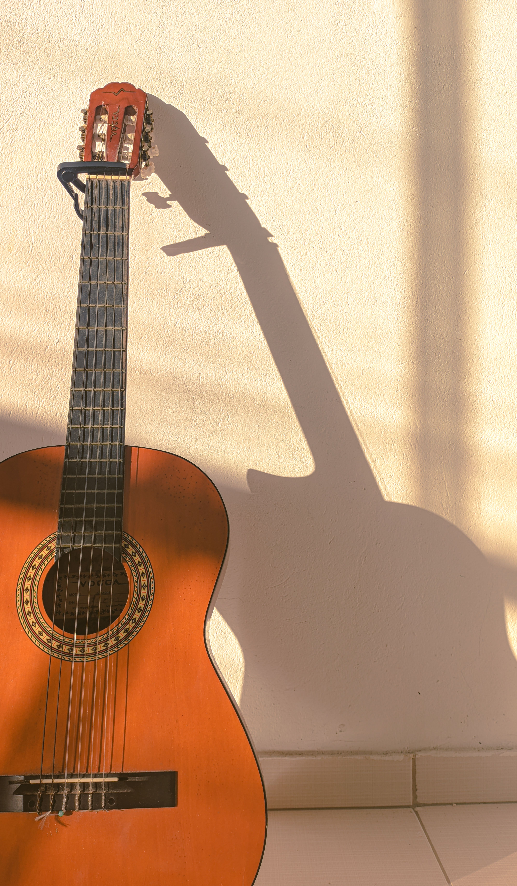

Guitarra & flamenco: palabras de Paco de Lucía
La guitarra me ha ofrecido la capacidad de poder expresarme con el resto del mundo sin utilizar la palabra.
La barriga se sacia rápido, el espíritu no se sacia nunca.
— Paco de Lucía
Bienvenido a mi web, donde hablo sobre el mundo del flamenco y la guitarra.
Soy Antonio y toco la guitarra flamenca. Conozco bastante sobre este mundo.
En esta web quiero compartir distintos tipos de guitarras, accesorios y biografías de guitarristas.

La guitarra me ha ofrecido la capacidad de poder expresarme con el resto del mundo sin utilizar la palabra.
La barriga se sacia rápido, el espíritu no se sacia nunca.
— Paco de Lucía
Marca: Ritmo Tipo: Española Precio: 399,99 €
Paco de Lucía y Camarón en TVE.
La flamenca tiene las cuerdas más bajas y suena más seca y brillante, ideal para el rasgueo. La española (clásica) tiene un sonido más dulce.
Yo llevo un año y ya me defiendo con algunos palos, pero el flamenco no se termina nunca de aprender.
Con la etiqueta <video> y dentro dos <source>, uno en mp4 y otro en webm.